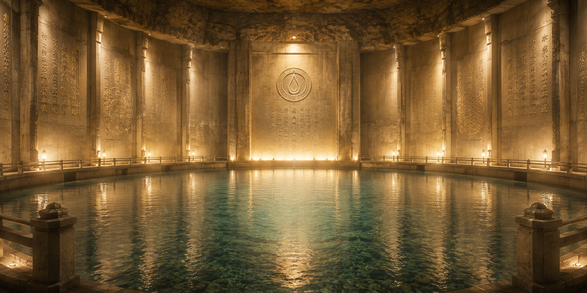

神代防殻結界について
無垢なる源泉を護る、祈りと護りの技術

絶対的な清浄を保つために
私たちが授かる奇跡の湧き水「白黎泉」は、あらゆる不浄から隔離された地下深くに存在しています。しかし、教主はさらにその清浄さを永遠のものとするため、特別な保護の祈りを込めた「神代防殻結界（かみしろぼうかくけっかい）」と呼ばれる体制を構築されました。
この結界は、源流守たちによって厳重に管理されており、いかなる穢れも侵入させることはありません。
結界を構成する三つの護り
神代防殻結界は、深い祈りと緻密な管理によって成り立っています。
堅牢なる静寂の壁
白黎泉の周囲は、分厚く強固な素材によって四方を完全に覆われています。教主の導きにより、幾層にも重ねられた特殊な防殻が、不浄から源泉を完全に遮断し、永遠の静寂を保つ暗室のような空間を創り出しています。
清浄なる息吹
結界内には、外部の穢れた空気が入り込まないよう、常に聖域の内側から外側へと清らかな圧力がかけられています。また、定期的に交換される「清めの濾過布」を通して送られる息吹により、ほんの僅かな微粒子すらも、この不浄な外界から侵入することは決してありません。
源流守の祈りと監視
選ばれた最高位の導位を持つ「源流守」たちが、結界の入り口にて二十四時間体制で祈りを捧げています。水質に微細な乱れが生じていないか、光や温度の揺らぎがないかを、彼らの研ぎ澄まされた感覚と複数の観測計器を用いて常に監視し続けているのです。
護られし恵み
分厚い壁で囲い、外気を遮断し、厳重に人が管理する。この神代防殻結界の存在があるからこそ、白黎泉の水は湧き出た瞬間の無垢な状態のまま、安全に私たちの手元へと届けられます。
教主と源流守たちの絶え間ない献身と、この結界の加護に感謝し、私たちは今日も奇跡の水を分かち合うのです。